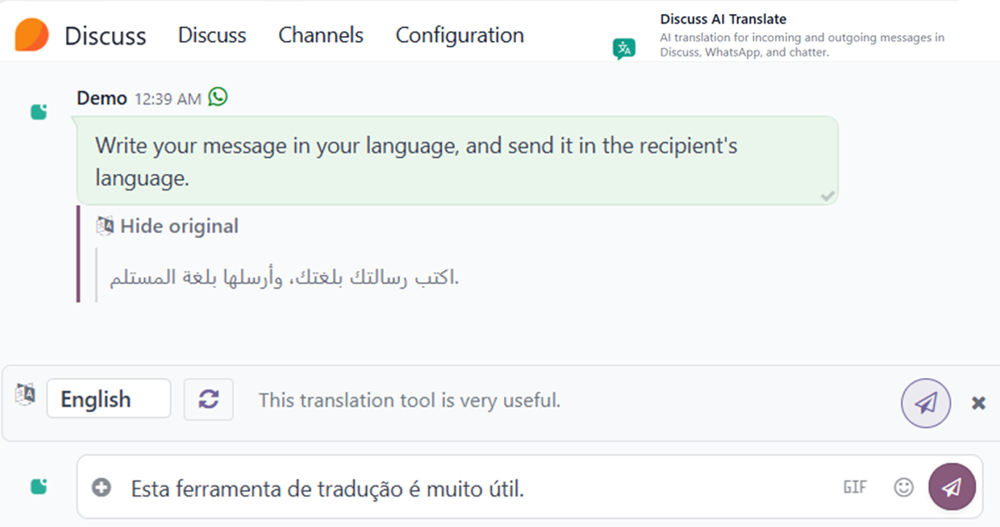

This module adds AI translation to Odoo's messaging surfaces. Translation operates in two directions:
Translation is performed by the AI provider configured in Odoo's
native ai module — currently OpenAI or Google Gemini.
The module does not require its own API key or SaaS account.
Type a draft in the composer in any source language, click AI Translate above the composer, then send the translated version with one click. The original draft text is archived on the sent message and accessible via View original.
Open any message's three-dot menu and select AI Translate. The translated text appears inline below the original, with a language picker supporting over 100 languages. The last-used target language is remembered per user.
The translation actions are available in Discuss channels and
direct messages, floating chat windows, WhatsApp conversations,
the email composer, record chatter on any
mail.thread model (CRM, Sales, Helpdesk, etc.),
and the live chat agent view.
A primary model and a failover model can be configured. If the primary provider call fails (network error, rate limit, invalid key), the request is retried on the failover model. Configuring two models from different providers gives cross-provider resilience.
Translation results are cached per message and target language
in Odoo's native translation table
(mail.message.translation). Subsequent reads of
the same message in the same target language return the cached
result without re-calling the AI provider. Cache entries are
vacuumed by Odoo's native cleanup mechanism after 2 weeks of
non-access.
The module consumes the AI provider configuration already set
up in Odoo's native ai module. No separate API
key, no separate SaaS account, no additional credentials at
the module level.
This module transmits message text to a third-party AI provider (OpenAI or Google Gemini, depending on configuration) over HTTPS for the sole purpose of translation. Review this section and ensure compliance with applicable data handling policies before enabling the feature.
en, ar).Whichever provider the administrator has configured in Odoo's AI settings — OpenAI (ChatGPT) and/or Google Gemini. Transmitted text is subject to that provider's terms of service, data retention policies, and applicable privacy law:
https://openai.com/policies/https://ai.google.dev/termsThe feature is disabled by default. An administrator must explicitly enable Enable Discuss AI Translate in Settings → General Settings → AI → Discuss AI Translate before any text is transmitted. Translation RPC endpoints refuse to call any AI provider until this opt-in is granted.
Translated results are cached in the local Odoo database
(mail.message.translation table). These cache entries
are not transmitted anywhere and are auto-removed after
2 weeks of non-access.
The full scope of the module is listed below.
whatsapp module is set up)mail.compose.message)mail.thread)mail.thread and is not covered
by this module.
The default build supports the AI providers integrated in
Odoo's native ai module: OpenAI and Google Gemini.
The module's provider layer can be extended to other AI
providers — for example, when the default providers are not
reachable from a given region, when a domain-specialized model
is preferred for a specific language pair, or when a different
provider is required for organizational reasons.
For inquiries about extending to a different AI provider,
contact hello@suitestate.com.
ai and ai_app modules, which are part of the Enterprise edition.api.openai.com and/or generativelanguage.googleapis.com.whatsapp module installed and configured with a valid
Meta WhatsApp Business Account. This module does not integrate with
the WhatsApp Business API itself — it only adds translation
capability to WhatsApp conversations already handled by Odoo's
native module. Setting up WhatsApp in Odoo (Meta Business Account,
phone number verification, template approval) is handled by the
native whatsapp module and is not in scope of this app.
Over 100 languages, including English, Arabic, Chinese (Simplified and Traditional), Spanish, Hindi, Portuguese, Bengali, Russian, Japanese, German, French, Urdu, Indonesian, Italian, Turkish, Korean, Vietnamese, Persian, Polish, Thai, Dutch, Ukrainian, Hebrew, Swahili, and others. Translation quality for a given language pair depends on the AI provider.
Right-to-left languages (Arabic, Persian, Urdu, Hebrew, Pashto,
Kurdish, Yiddish) render with dir="rtl" in the
translation preview and panel.
All configuration is in Settings → General Settings → AI → Discuss AI Translate:
Two system parameters are available for advanced tuning:
suite_ai_translate.temperature (default 0.2) controls
LLM sampling temperature, and
suite_ai_translate.max_input_chars (default 8000)
sets the per-message length cap.

Released under the GNU Lesser General Public License v3
(LGPL-3.0-or-later). The full license text is included in the
LICENSE file shipped with the module.
Maintained by SuiteState. For questions, bug
reports, or feature requests, visit
suitestate.com or contact
hello@suitestate.com.